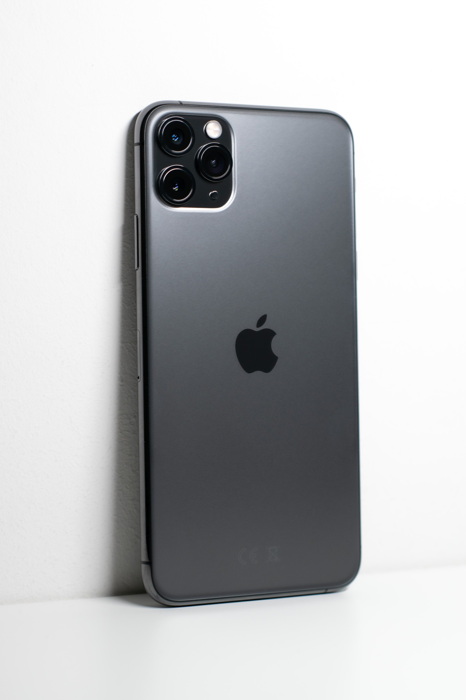
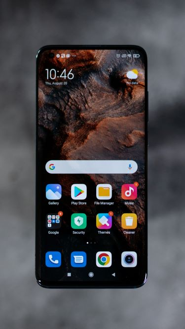
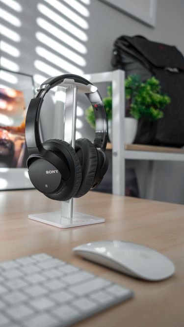

The iPhone is a line of smartphones designed and marketed by Apple Inc. that use Apple's iOS mobile operating system. The first-generation iPhone was announced by former Apple CEO Steve Jobs on January 9, 2007. Since then Apple has annually released new iPhone models and iOS updates. As of November 1, 2018, more than 2.2 billion iPhones had been sold.
The iPhone has a user interface built around a multi-touch screen. It connects to cellular networks or Wi-Fi, and can make calls, browse the web, take pictures, play music and send and receive emails and text messages. Since the iPhone's launch further features have been added, including larger screen sizes, shooting video, waterproofing, the ability to install third-party mobile apps through an app store, and many accessibility features. Up to 2017, iPhones used a layout with a single button on the front panel that returns the user to the home screen. Since 2017, more expensive iPhone models have switched to a nearly bezel-less front screen design with app switching activated by gesture recognition.At EXIT we have all the latest iphones on sale.

A mobile phone, cellular phone, cell phone, cellphone, handphone, or hand phone, sometimes shortened to simply mobile, cell or just phone, is a portable telephone that can make and receive calls over a radio frequency link while the user is moving within a telephone service area. The radio frequency link establishes a connection to the switching systems of a mobile phone operator, which provides access to the public switched telephone network (PSTN). Modern mobile telephone services use a cellular network architecture and, therefore, mobile telephones are called cellular telephones or cell phones in North America. In addition to telephony, digital mobile phones (2G) support a variety of other services, such as text messaging, MMS, email, Internet access, short-range wireless communications (infrared, Bluetooth), business applications, video games and digital photography. Mobile phones offering only those capabilities are known as feature phones; mobile phones which offer greatly advanced computing capabilities are referred to as smartphones.We have a range of cellular phones to choose from at EXIT.

Headphones are a pair of small loudspeaker drivers worn on or around the head over a user's ears. They are electroacoustic transducers, which convert an electrical signal to a corresponding sound. Headphones let a single user listen to an audio source privately, in contrast to a loudspeaker, which emits sound into the open air for anyone nearby to hear. Headphones are also known as earspeakers, earphonesor, colloquially, cans.Circumaural ('around the ear') and supra-aural ('over the ear') headphones use a band over the top of the head to hold the speakers in place. Another type, known as earbuds or earpieces consist of individual units that plug into the user's ear canal. A third type are bone conduction headphones, which typically wrap around the back of the head and rest in front of the ear canal, leaving the ear canal open. In the context of telecommunication, a headset is a combination of headphone and microphone. Headphones are a nice addition to cell phones and are readily available at EXIT.